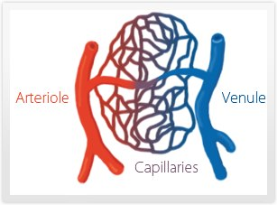
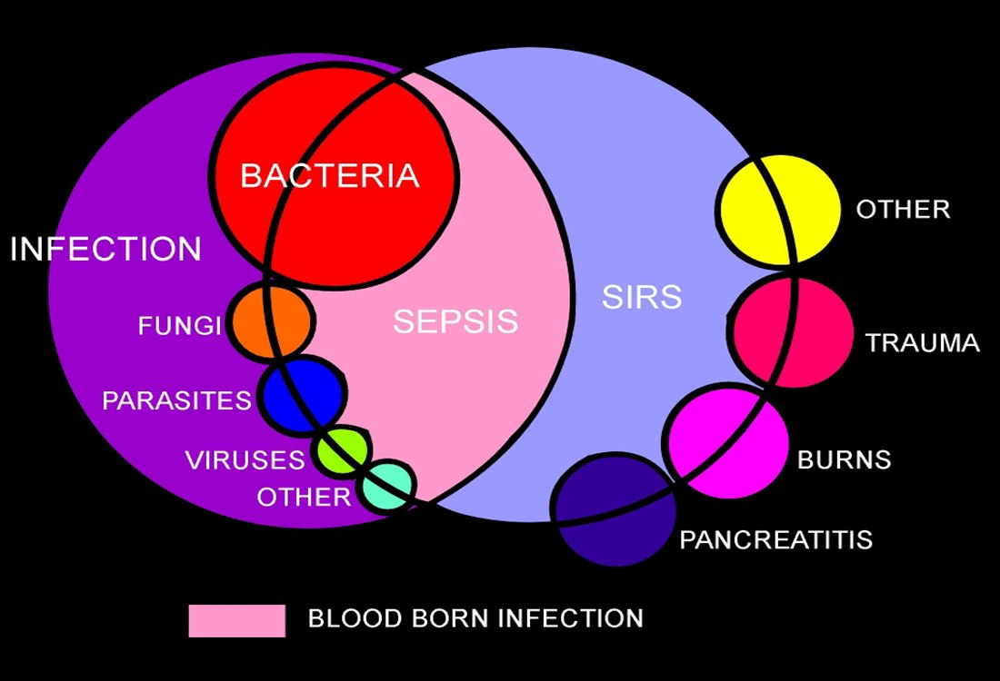
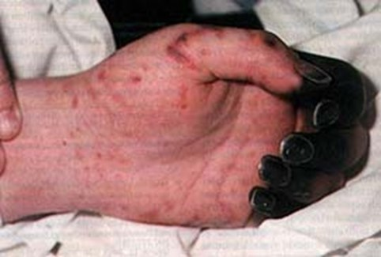
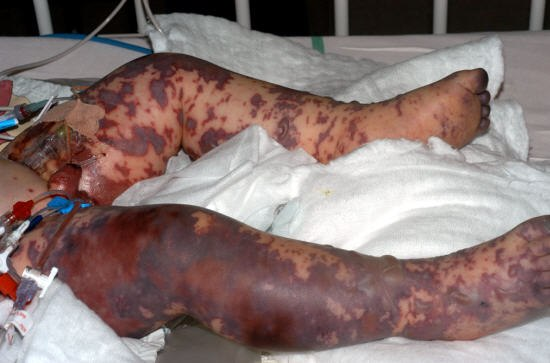

Day 4 · Topic 2
Shock, Sepsis, MODS
Microcirculation: The Key to Cell Life
The Capillary Bed and Cell Survival
- Where: the portion of the vascular bed between arterioles and venules. The most significant portion of circulation for cell survival: cells line up next to the capillaries.
- Its jobs: delivers oxygen and nutrients to cells, removes waste products, regulates blood volume.
- Constricts or dilates selectively to send blood to cells in need: the gut's capillaries shut down when the brain, lungs and heart need more. Where shunting to the vital organs happens.
- The capillaries themselves do not contract: a precapillary sphincter regulates the flow.
- The exchange is controlled by blood pressure, SVR and cardiac output. All three matter because they serve this transfer of oxygen and nutrients to the cells.
- Lost in shock: critically ill patients can lose the ability to perfuse at the capillary level.

From Insult to MODS
SIRS or Sepsis
The precursors. An insult sets off a widespread inflammatory response.
Shock
Perfusion is lost at the capillary level. The cells lose oxygen and nutrients.
MODS
The shock state progresses until organs fail. See below.
SIRS and Sepsis
What Goes Wrong in SIRS and Sepsis
- Widespread inflammation in a severe disease process, set off by an insult.
- Negative feedback loop lost: no balance between the pro-inflammatory and anti-inflammatory signals.
- Increased capillary permeability: inflammatory mediators open the endothelial walls. Fluid shifts from the intravascular space into the cellular space: a relative hypovolemia.
- Other mediators: microvascular clotting, impaired fibrinolysis, widespread vasodilation.
SIRS (Systemic Inflammatory Response Syndrome)
- Trigger: an insult that is not an infection: trauma, burns, pancreatitis. Also a big MI (usually through ischemia), an inflammatory disease process, or a combination.
- Anyone can have a SIRS response. Many patients meet its criteria, so a pro-inflammatory state is common.
- A cue: not everyone goes on to sepsis or shock, but the patient is at risk for worse.
Sepsis
- Trigger: a known or suspected source of infection: bacteria, fungi, parasites, viruses, other.
- Positive blood cultures are not required.

What Shock Is
Shock begins when the cardiovascular system fails to function properly because of at least one of four essential circulatory components.
The Four Essential Circulatory Components
- Blood volume
- Myocardial contractility
- Blood flow
- Vascular resistance
Shock: The Clinical Picture
- Compensation first: when one component fails, the others usually compensate. Shock follows when the compensatory mechanisms fail and perfusion is lost.
- Not a single clinical entity: no shock criteria, as there are for SIRS and sepsis. Read the whole picture of the patient.
- A life-threatening response to altered circulation that leads to a lack of tissue perfusion.
- Any or all cells can be affected. End result: organ dysfunction or death. With enough lost perfusion, the organ itself dies.
Lack of Perfusion
Lack of perfusion is a lack of oxygen to the cells.
Cells Switch Metabolism
The cells begin to go to anaerobic metabolism.
Tissue Acidosis
Its by-product, lactic acid, builds up. Too acidotic: death.
Stages of Shock
Stage 1: Initiation
Subclinical hypoperfusion, and altered oxygen delivery and consumption at the tissues. No obvious signs, though monitored hemodynamics may change.
Stage 2: Compensatory
Sustained reduction in tissue perfusion. Neural, endocrine and chemical mechanisms kick in.
Stage 3: Progressive
Increasing tissue hypoperfusion, lactic acidosis, failure of the sodium-potassium pump. The big clinical downturn.
Stage 4: Refractory
Severe tissue hypoxia, with ischemia and necrosis. Treatment stops working.
Compensatory Mechanisms
| Mechanism | What It Does |
|---|---|
| Neural (the SNS response) | Heart rate and contractility increase. Vasoconstriction, bronchodilation. Blood redistributed to the vital organs. |
| Endocrine | The renin-angiotensin system (RAS), ADH and glucocorticoids: the body holds on to water and sodium and vasoconstricts, to raise blood pressure and perfusion. |
| Chemical | The liver releases stored glycogen and blood sugar rises, to feed the cells that need it. Sugar is the cell's energy source. |
Compensation is not good news: it answers an inappropriate hypoperfusion, so cells somewhere are dying.
Progressive Stage: What You See
- Blood pressure: low, with a narrow pulse pressure.
- Breathing: tachypnea.
- Skin: cold, clammy, mottled.
- Neuro: lethargy, altered level of consciousness, even coma.
- Kidneys: anuria. Increased BUN and creatinine.
- Labs: hyperglycemia, increased potassium, acidosis.
- The truly shocked patient in the ICU. Still reversible: fixing the cause can stop it here.
Refractory Stage: What You See
- Tissues: severe hypoxia with ischemia and necrosis. Worsening acidosis.
- Lungs and blood: ARDS, acute respiratory failure, DIC.
- Resistant hypotension: fluid resuscitation and blood pressure meds are not working.
- Organs: acute kidney injury, liver injury, cerebral or myocardial damage.
- Higher mortality, lower chance of recovery: the goal is to prevent this stage.
Shock States
| Shock State | What Fails |
|---|---|
| Cardiogenic | Impaired oxygenation: the heart fails as a pump to deliver oxygenated blood. |
| Hypovolemic | Inadequate cardiac output from decreased intravascular volume. |
| Distributive | A relative hypovolemia from excessive vasodilation. |
| Obstructive | Impaired oxygenation or perfusion from a mechanical barrier to blood flow. |
Clinical Findings in Shock
| Finding | What to Know |
|---|---|
| Vital signs |
|
| Urine output |
|
| Level of consciousness |
|
| Color |
|
| Arterial pH |
|
| Lactate |
|
| SvO2 |
|
| Organ function |
|
SvO2 is taught in Hemodynamics
Treating Shock
Optimize Oxygen Delivery
- Supplemental oxygen: almost every patient. It often helps little unless the problem is like ARDS, but maximize it.
- IV fluids: volume to perfuse with. Crystalloid: usually LR, or normal saline. Colloid when third spacing is a concern: albumin. Blood is a colloid too, but it replaces blood rather than pulling volume back from the tissues.
- Inotropic medications: positive inotropes such as milrinone and dobutamine give the heart more squeeze.
- Vasoactive medications: tighten up the blood pressure, so perfusion reaches the peripheral tissues.
Decrease Oxygen Consumption
- Decrease the total work of the body: movement, pain and anxiety, temperature.
- Sedation, pain control, neuromuscular blocking agents: the biggest way. The patient is put to sleep (not a restorative sleep), which severely decreases demand.
- Maintain normothermia: critical. A fever is a big increase in metabolic demand.
- Maintain normal blood sugars: they may be scary high or low. An insulin drip or a dextrose drip. Poor glycemic control varies oxygen consumption.
Cardiogenic Shock
Cause: usually a serious MI or end-stage heart failure. Also myocarditis or severe dysrhythmias. The heart muscle is damaged or stunned.
| Area | Clinical Manifestations |
|---|---|
| Hemodynamic |
|
| Fluid volume overload |
|
| Neurologic |
|
| ABG |
|
Cardiogenic Shock: Treatment Goals
- Improve contractility: positive inotropes such as milrinone and dobutamine. Or mechanical circulatory support: LVAD, Impella, ECMO, balloon pump.
- Optimize preload: maybe a little fluid, but never overload a heart failure patient.
- Reduce afterload: control the blood pressure.
- Prevent and treat dysrhythmias: the irritated or stunned heart is at higher risk.
LVAD and ECMO are taught in Cardiovascular Critical Care Issues
Hypovolemic Shock
| Cause | Examples |
|---|---|
| External blood loss | GI hemorrhage, surgery, trauma |
| External loss of fluid | Diarrhea and vomiting, diuresis, burns |
| Internal sequestration of blood or fluid | Ascites, third spacing, internal bleeding such as a retroperitoneal bleed. That blood cannot be pulled back into the vessels, as third-spaced fluid can. |
Usually an absolute loss: the blood or fluid is gone. Third spacing hypovolemic shock can be trended, and does not usually come on so quickly.
Hypovolemic Shock: Hemodynamic Effects
- Low blood pressure, cardiac output and index, urine output: with no volume there is no preload, and cardiac output falls.
- MAP below 60.
- Heart rate high, initially: a fluid volume deficit in the vessels.
- The unique feature, a very high SVR: the vessels clamp down to push what little fluid there is out to the peripheral tissues.
Hypovolemic Shock: Assessments
- Altered LOC: agitation, confusion, then coma.
- Pulmonary: early, tachypnea and hyperventilation. Late, labored and shallow.
- Pulse: weak and thready.
- Skin: cool and clammy.
- Urine: dark, concentrated, low.
Hypovolemic Shock: Treatment Goal
- Fluid resuscitate and improve the blood pressure.
- Still not doing well once fluid resuscitated: vasopressors.
- Usual targets: hemoglobin around 7 if the cause is blood loss. MAP around 60.
Distributive Shock
What Happens in Distributive Shock
- Widespread vasodilation: also called vasogenic shock.
- Decreased venous return to the right atrium: the vessels are so open that fluid flows into the capillary space and stays there.
- Why relative hypovolemia: by the time the volume reaches the capillaries, there is no blood pressure behind it.
- Not really a fluid volume problem: fluids refill the tank, but the vessels stay open.
- Decreased stroke volume, cardiac output, blood pressure and tissue perfusion. Hypoxia.
- Three types: septic, the most common (below), neurogenic, and anaphylactic. Treat anaphylactic shock with epinephrine.
Neurogenic shock is taught in Spinal Cord Injury
Sepsis and Septic Shock
| State | What Defines It |
|---|---|
| Sepsis |
|
| Severe sepsis |
|
| Septic shock |
|
Early Septic Shock
- Increased respiratory rate: the first sign.
- Changes in LOC: confusion, agitation.
- Fever or hypothermia: temperature dysregulation.
Progressive Septic Shock
- Fluid shifts: third spacing and edema. The vessels are open, and intravascular volume moves into the capillary space.
- Lab trends: rising WBC. Blood cultures positive or negative.
- Misdistribution of circulation: blood shunted from the gut to the vital organs. Diminished bowel sounds. Oliguria, from less perfusion to the kidneys.
- Tissue ischemia and necrosis: watch the gut, skin and extremities. Ischemic bowel can follow.
- Coagulopathy: bleeding and oozing from insertion sites, altered platelet counts, prolonged bleeding times.
Why Septic Shock Clots and Bleeds
- A thrombotic and fibrinolytic response to infection: mediators released from bacteria and WBCs.
- They stimulate an unregulated procoagulant state, and platelet aggregation and adhesion: microcirculatory clots.
- Clots and bleeding in the peripheral tissues: perfusion there is lost, and patients can lose hands and feet.
- Particular to septic shock, though possible in other shock. Seen quite often in severe septic shock.
- No specific treatment: treat the sepsis early, and keep perfusion and the MAP up.


Obstructive Shock
| Most Common Cause | How It Blocks Flow |
|---|---|
| PE (pulmonary embolism) |
|
| Tension pneumothorax |
|
| Cardiac tamponade |
|
Hemodynamics of Shock
Shock is where invasive hemodynamic monitoring comes in: preload, afterload and cardiac output, with the assessment, show whether the interventions are improving perfusion.
| Shock State | Preload (Wedge Pressure) | Cardiac Output | Afterload (SVR) | Treatment |
|---|---|---|---|---|
| Hypovolemic | ↓ Primary | ↓ | ↑ | IV fluids |
| Cardiogenic | ↑ | ↓ Primary | ↑ | Inotropes, revascularization |
| Distributive (septic, neurogenic) | ↓ | ↓ | ↓ Primary | Vasopressors, IV fluids |
Primary: the abnormality that starts that shock state.
Wedge pressure, cardiac output and SVR are taught in Hemodynamics
Multiple Organ Dysfunction Syndrome (MODS)
MODS: What It Is
- Dysfunction of two or more organ systems, as the shock state progresses.
- Considered chronically critically ill.
- Mortality: about 50% with two organ systems failing, 100% at five.
Who Is at Risk for MODS
- Systemic infection, particularly gram-negative sepsis
- Trauma
- Multiple blood transfusions
- Aspiration pneumonia
- Large volume replacement with crystalloid
- Extensive burns
- End-organ failure: end-stage liver or renal disease already has one organ failing.
- Acute pancreatitis
- Hypovolemia
- Cardiogenic shock
- HIV
Look for Severe Organ Dysfunction
- Monitor: urine output, respiratory function, bowel sounds and the gut, liver enzymes.
- Titrate and assess every organ's function.
MODS: Treatment Goals
- Identify at-risk patients: who is in shock, and whose shock is not improving quickly with the interventions.
- Prevent progression: more interventions, before the organ dysfunction progresses.
| Prognosis Question | What to Consider |
|---|---|
| How many organs are involved, and to what degree? |
|
| How severe is the illness or injury? |
|
| What is the patient's underlying organ reserve? |
|
| How rapidly was effective treatment started? |
|
| How many later injuries and complications, and how severe? |
|